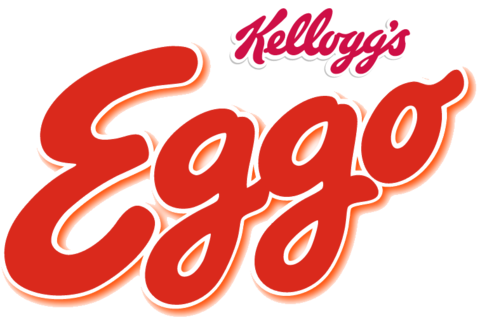

Kellogg's produces cereal and convenience foods, including crackers and toaster pastries, and markets their products by several well-known brands including Corn Flakes, Rice Krispies, Frosted Flakes, Pringles, Eggo, and Cheez-It. Kellogg's mission statement is "Nourishing families so they can flourish and thrive."
In 1876, John Harvey Kellogg became the superintendent of the Battle Creek Sanitarium (originally the Western Health Reform Institute founded by Ellen White) and his brother, W. K. Kellogg, worked as the bookkeeper. This is where corn flakes were created and led to the eventual formation of the Kellogg Company.
For years, W. K. Kellogg assisted his brother in research to improve the vegetarian diet of the Battle Creek Sanitarium's patients, especially in the search for wheat-based granola. The Kelloggs are best known for the invention of the famous breakfast cereal corn flakes. The development of the flaked cereal in 1894 has been variously described by those involved: Ella Eaton Kellogg, John Harvey Kellogg, his younger brother Will Keith Kellogg, and other family members. There is considerable disagreement over who was involved in the discovery, and the role that they played. It is generally agreed that upon being called out one night, John Kellogg left a batch of wheat-berry dough behind. Rather than throwing it out the following day, he sent it through the rollers and was surprised to obtain delicate flakes, which could then be baked.
W. K. Kellogg persuaded his brother to serve the food in a flake form. Soon the flaked wheat was being packaged to meet hundreds of guest mail-order requests after they left the Sanitarium. However, Dr. John Harvey forbade his brother Will from distributing cereal beyond his consumers. As a result, the brothers fell out, and W. K. launched the Battle Creek Toasted Corn Flake Company on February 19, 1906.On July 4, 1907, a fire destroyed the main factory building. W.K. Kellogg had the new plant in full operation six months after the fire.
Convincing his brother to relinquish rights to the product, Will's company produced and marketed the hugely successful Kellogg's Toasted Corn Flakes and was renamed the Kellogg Toasted Corn Flake Company in 1909, taking on the current name of the Kellogg Company in 1922.
By 1909, Will's company produced 120,000 cases of Corn Flakes daily. John, who resented his brother's success, filed suit against Will's company in 1906 for the right to use the family name. The resulting legal battle, which included a trial that lasted an entire month, ended in December 1920 when the Michigan Supreme Court ruled in Will's favor.
In 1931, the Kellogg Company announced that most of its factories would shift towards 30-hour work weeks from the usual 40. W.K. Kellogg stated that he did this so that an additional shift of workers would be employed to support people through the depression era. This practice remained until World War II and continued briefly after the war, although some departments and factories remained locked into 30-hour work weeks until 1980.
From 1969 to 1970, the slogan “Kellogg's puts more into your day” was used on Sunday morning TV shows. From 1969 to 1977, Kellogg's acquired various small businesses, including Salada Foods, Fearn International, Mrs. Smith's Pies, Eggo, and Pure Packed Foods; however, it was later criticized for not diversifying further like General Mills and Quaker Oats were. After underspending its competition in marketing and product development, Kellogg's US market share hit a low of 36.7% in 1983. A prominent Wall Street analyst called it "a fine company that's past its prime" and the cereal market was being regarded as "mature". Such comments stimulated Kellogg chairman William E. LaMothe to improve, which primarily involved approaching the demographic of 80 million baby boomers rather than marketing children-oriented cereals. In emphasizing cereal's convenience and nutritional value, Kellogg's helped persuade U.S. consumers aged 25 to 49 to eat 26% more cereal than people of that age ate five years prior. The U.S. ready-to-eat cereal market, worth $3.7 billion at retail in 1983, totaled $5.4 billion by 1988 and had expanded three times as fast as the average grocery category. Kellogg's also introduced new products, including Crispix, Raisin Squares, and Nutri-Grain Biscuits, and reached out internationally with Just Right aimed at Australians and Genmai Flakes for Japan. During this time, the company maintained success over its top competitors: General Mills, which largely marketed children's cereals, and Post, which had difficulty in the adult cereal market.
In 2001, Kellogg's acquired the Keebler Company for $3.87 billion.Over the years, it has also gone on to acquire Morningstar Farms and Kashi divisions or subsidiaries. Kellogg's also owns the Bear Naked, Natural Touch, Cheez-It, Murray, Austin cookies and crackers, Famous Amos, Gardenburger (acquired 2007), and Plantation brands. Presently, Kellogg's is a member of the World Cocoa Foundation.
In 2012, Kellogg's became the world's second-largest snack food company (after PepsiCo) by acquiring the potato crisps brand Pringles from Procter & Gamble for $2.7 billion in a cash deal.
In 2017, Kellogg's acquired Chicago-based food company Rxbar for $654 million. Earlier that year, Kellogg's also opened new corporate office space in Chicago's Merchandise Mart for its global growth and IT departments. In the UK, Kellogg's also released the W. K. Kellogg brand of organic, vegan and plant-based cereals (such as granolas, organic wholegrain wheat, and "super grains") with no added sugars.
n 2018, Kellogg's decided to cease their operations in Venezuela due to the economic crisis the country is facing.Their factories were taken by the Venezuelan state under the Nicolás Maduro administration. In mid-2019, Venezuelan Kellogg's cereal boxes began portraying the Venezuelan flag and a motto from Maduro: "Together, everything is possible" (Spanish: Juntos todo es posible) alongside Kellogg's logo and mascots were sold all over the country. Kellogg's considers it as an illicit use, and the company stated they would take legal action.
On April 1, 2019, it was announced that Kellogg's was selling Famous Amos, Murray's, Keebler, Mother's, and Little Brownie Bakers (one of the producers of the cookies for the Girl Scouts of the USA) to Ferrero SpA for $1.4 billion.On July 29, 2019, that sale was completed. Kellogg's kept the Keebler cracker line and replaced the Keebler name on their crackers with the Kellogg's name. In June 2019, Kellogg's announced their next-generation Kellogg's® Better Days global commitment, focusing on hunger, children, and farmers, with specific targets to reach by 2030. In October 2019, Kellogg's partnered with GLAAD by "launching a new limited edition "All Together Cereal" and donating $50,000 to support GLAAD's anti-bullying and LGBTQ advocacy efforts". The All Together cereal combined six mini cereal boxes into one package to bring attention to anti-bullying.
In January 2020, Kellogg's decided to work with suppliers to phase out the use of glyphosate by 2025, which some farmers have used as a drying agent for wheat and oats supplied to Kellogg's.
In October 2021, workers at all of Kellogg's cereal-producing plants in the United States went on a strike conducted by the Bakery, Confectionery, Tobacco Workers and Grain Millers' International Union over disagreements over the terms of a new labor contract.On December 3, 2021, a tentative deal was struck to end the worker strike,but the union members overwhelmingly rejected the tentative agreement and Kellogg's management announced they would seek to replace all 1,400 striking workers.On December 21, 2021, about 1,400 Kellogg workers approved a collective bargaining agreement, ending the strike, which had lasted 77 days.
On June 21, 2022, Kellogg's announced that the company would spin off three cereal, snacks, and plant-based food divisions.The North American cereal and plant-based food spin-off companies will keep Battle Creek as their headquarters and the new snack and international cereal company will be based in Chicago.The successor company, known as Global Snacking Co. temporarily, represents 80 percent or $11.4 billion of Kellogg's sales. 60 percent of Global Snacking's business was snacks, and nearly half of the company's business was in the United States. The cereal business, temporarily called North America Cereal Co., would be the second-largest American cereal company and the largest in Canada and the Caribbean, with 5 of the top 11 brands and $2.4 billion in annual sales. Plant-based foods, representing $340 million in annual sales, would be called "Plant Co." and could even be sold.In January of 2023, Kellogg's shelved its plans to spin off its plant food business and would retain it as part of Global Snacking Co. On March 15, 2023, Kellogg's announced that North America Cereal Co. branch will be formally named WK Kellogg Co. division and Global Snacking Co. branch will be called Kellanova as a division. The ticker symbol "K" will be used by Kellanova on the NYSE.
Stay connected with Kellogg Company by joining us on Facebook, LinkedIn, Twitter, YouTube and Flickr.